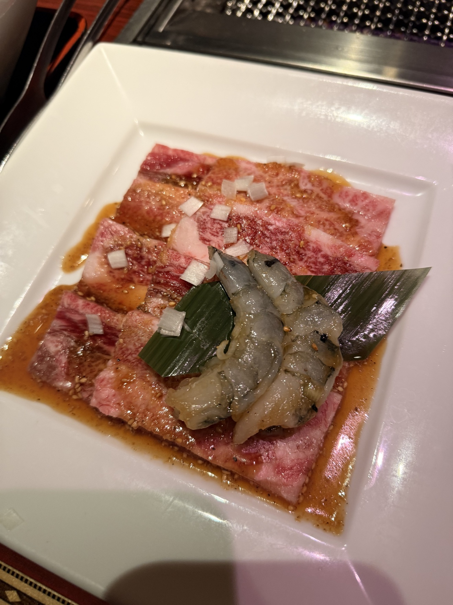
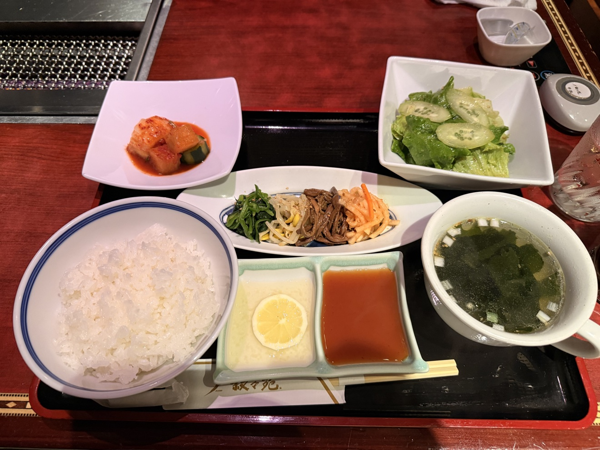
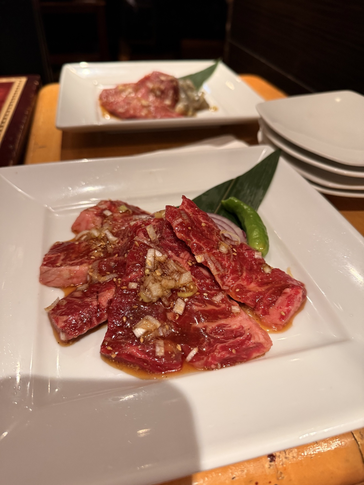
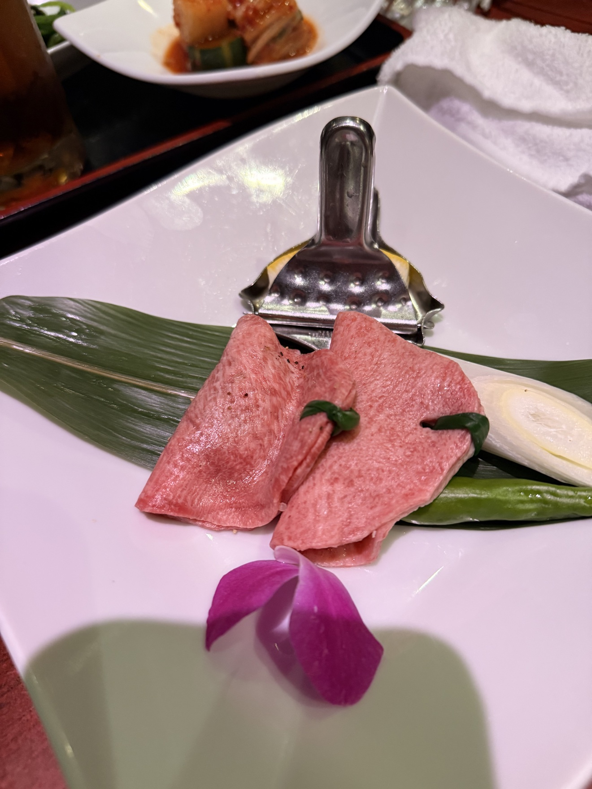
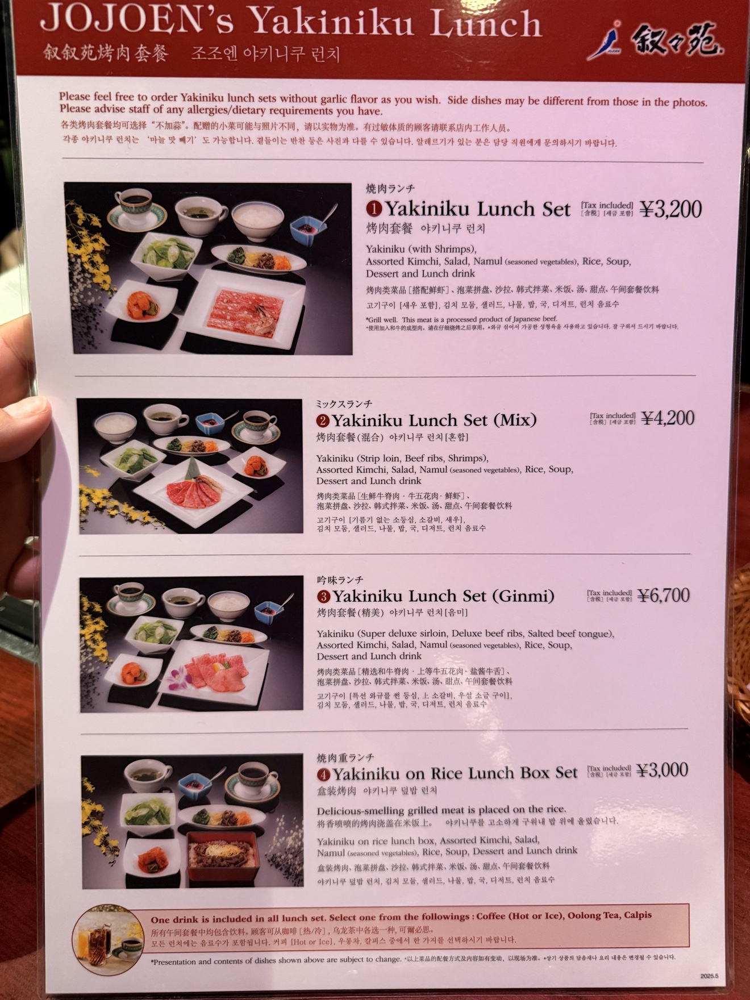
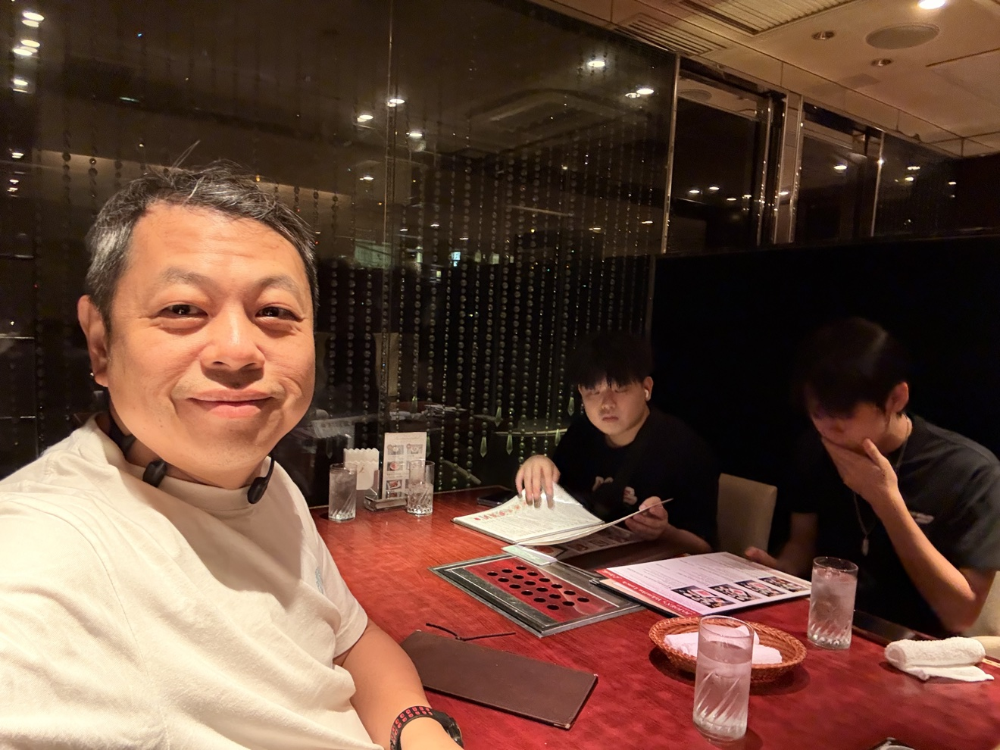

來東京想吃燒肉，叙々苑是安全牌。這次去的是新宿歌舞伎町店，中午去，點午間套餐——¥3,200 起就能吃到這個水準，CP 值真的高。

午間套餐：¥3,200 起吃到這個水準

午間套餐從 ¥3,200 起，內容該有的都有。想吃好一點、又不想晚上花大錢，中午來是對的。
🥩 橫隔膜肉：必點

橫隔膜肉必點。醬漬入味，烤到表面微焦，肉汁跟醬香一起上來。這盤我可以為了它再來一次。
👅 鹽味牛舌：擠檸檬很清爽

牛舌也是必點，鹽味調味剛好，擠上檸檬很清爽，脆口不膩。吃燒肉中場來一片，味覺直接重開機。
📋 菜單：午間套餐看這裡

菜單直接拍給你們看，午間套餐的品項跟價格一目了然。實際價格以店內公告為準。

一句話總結：東京想吃燒肉又怕踩雷，就去叙々苑。中午去點午間套餐，橫隔膜跟牛舌不要錯過。
關於這篇文章
備註
本文照片皆為金霸本人實拍。店家：叙々苑 新宿歌舞伎町店，地址：東京都新宿區歌舞伎町1-18-8 莫納米大樓 9F。各分店品項與營業時間以官方網站公告為準。發布日期：2026 年 10 月 18 日。